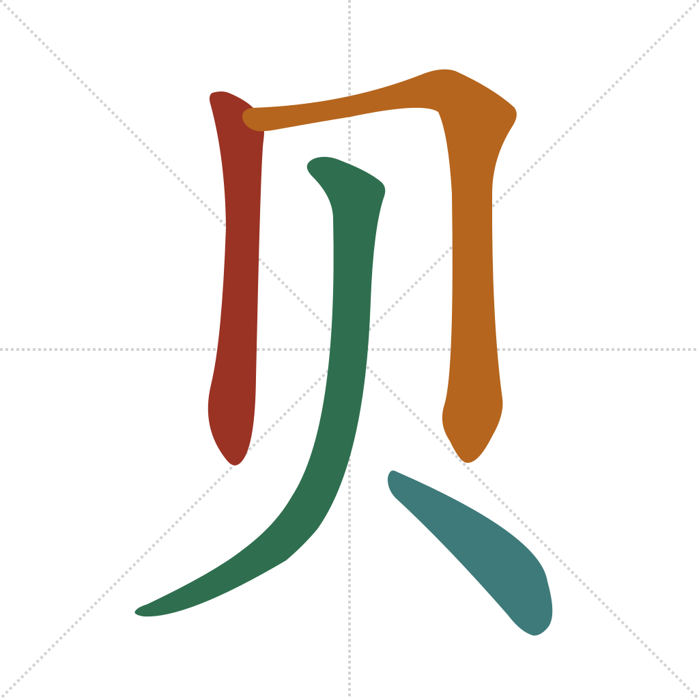
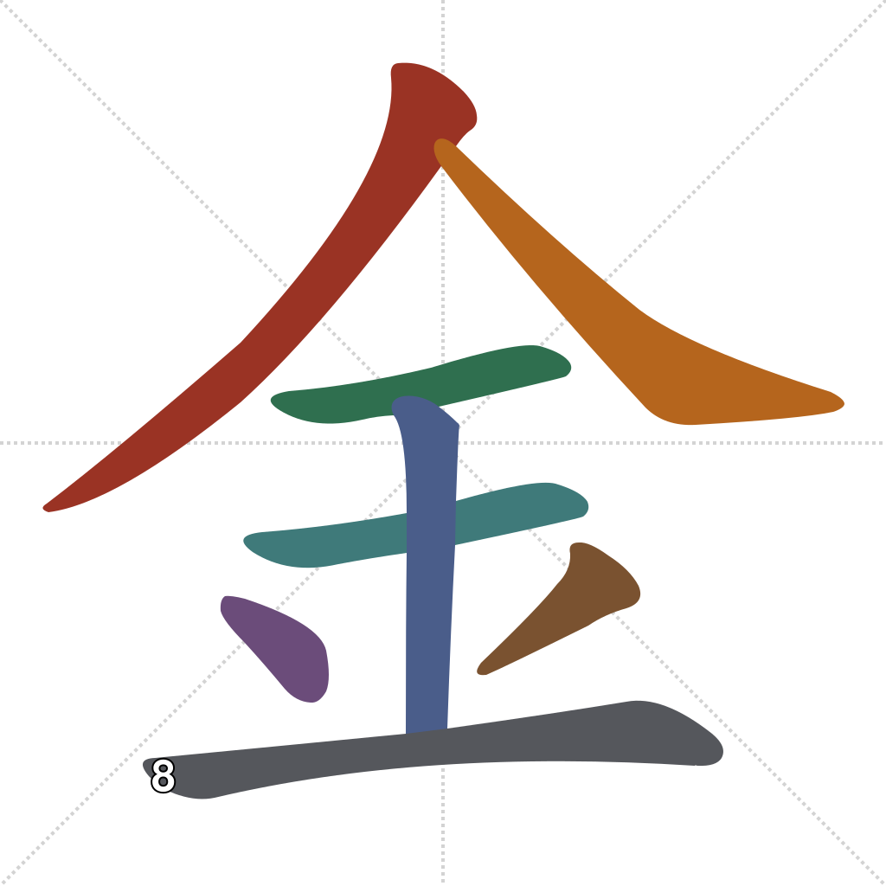

Lesson 10 · Foundational Components
金 closes a loop from Lesson 7, which named it as the one classical element still missing after 木/水/火/土. 贝 closes a different one: Lesson 3 used 太贵 ("too expensive") as a real-world example without ever explaining 贵 — today it finally gets decomposed.
Quick recall — click each card to flip it:
贝 is the simplified descendant of 貝, a pictograph of a cowrie shell — literal seashells, used as currency in ancient China before metal coins took over. That history is why so many characters about value, trade, and cost contain 贝: 财 (cái, "wealth"), 购 (gòu, "to purchase"), and — getting to Lesson 3's loose end — 贵:
guì — expensive, precious, noble. The bottom is 贝 — something valuable, hence costly. The top piece in the traditional form 貴 is 臾 (yú), which is the phonetic element — the link between yú and guì is, like rén/qiān in Lesson 9, an Old Chinese correspondence not audible in modern Mandarin. Simplified Chinese replaced 臾 with a graphic variant (𠀐) that has no standard pinyin of its own, hence the "?" in the diagram. (Wiktionary: 贵)
So Lesson 3's 太贵 (tài guì) really does mean what it sounded like: "too" plus a character whose meaningful half is literally "shell/money" — "too costly."
钱 (money) itself follows the same pattern as 贵: one taught piece, one named-only piece.
qián — money. 钅 is "metal" (today's 金). 戋 (jiān, "small, trifling") is purely phonetic — jiān and qián are close enough that the sound signal is still audible. 戋 isn't entering the component pool — named for accuracy, not for you to memorize. (Wiktionary: 钱)
Outer frame first, then the two lower "feet" of the shell shape:

Top 人-shape first, then the horizontal, then the inner box, then the two bottom strokes:

Which character completes the five classical elements (木水火土__)?
金 becomes which shape on the left side of a character, as in 钱 and 钢?
贝 originally depicted:
贵 (expensive) has 贝 as its meaningful bottom half because:
Etymology sources for every character above are linked inline. For the rigorous version of any of them, see the Outlier Dictionary of Chinese Characters.
Out in the world: 贵 and 太贵 are useful the moment you're shopping or bargaining; 钱 (money) and the 钅-shape-shift are worth watching for on price tags, ATMs (取钱, "withdraw money"), and receipts.